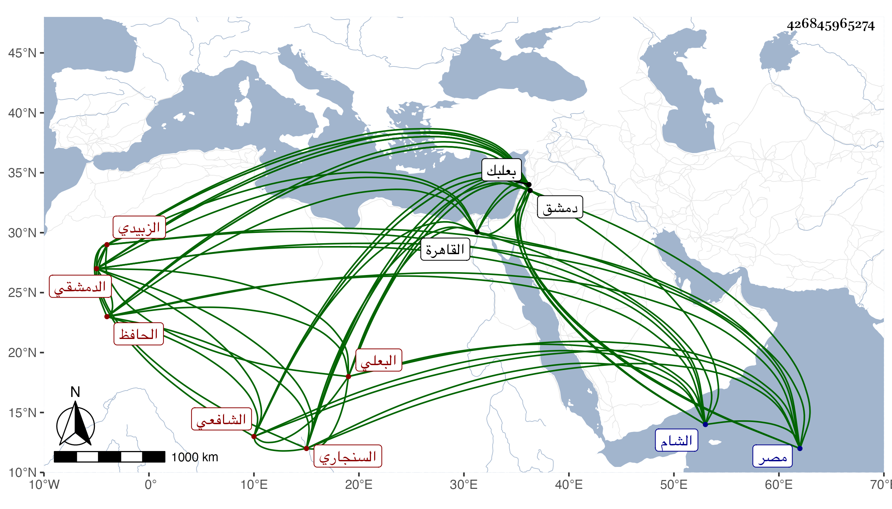

0902Sakhawi.DawLamic.ITO20230111-ara1.EIS1600.426845965274
Biography ID: 426845965274
5
عبد الله بن إبراهيم بن خليل بن عبد الله بن محمود بن يوسف بن تمام الجمال أبو محمد بن أبي إسحق الزبيدي من بني السموءل السنجاري الأصل البعلي ثم الدمشقي الشافعي أخو عائشة ويعرف بابن الشرايحي الحافظ الشهير . ولد يوم الثلاثاء تاسع رجب سنة ثمان وأربعين وسبعمائة ببعلبك ونشأ بها وأخذ عن العماد بن بردس وغيره ثم دخل دمشق فأدرك بها جماعة من أصحاب الفخر وأحمد بن شيبان ثم من أصحاب ابن القواس وابن عساكر ثم من أصحاب التقي سليمان والمطعم ثم من أصحاب الحجار ونحوه ثم من أصحاب ابن الجزري وابنة الكمال و المزي فأكثر جدا من حدود الستين وإلى قرب موته حتى سمع من أقرانه فمن دونه ، وهو مع ذلك أمي بل ولا ينظر إلا نظرا ضعيفا ومن شيوخه إسماعيل بن السيف أبي بكر ابن إسماعيل الحراني سمع عليه الأربعين لأبي الأسعد القشيري وابن أميلة سمع عليه جامع الترمذي وسنن أبي داود والصلاح بن أبي عمر سمع عليه المسند ويوسف بن عبد الله بن الحبال سمع عليه سيرة ابن هشام وصار أعجوبة دهره في معرفة الأجزاء والمرويات ورواتها والعالي والنازل ولديه مع ذلك فضائل ومحفوظات ومذاكرة حسنة ومشاركة في فنون الحديث كل ذلك مع الشهامة والشجاعة والمهابة وكونه جدا كله لا يعرف الهزل بل يتدين مع خير وشرف ، وخرج لجماعة من أقرانه فمن دونهم وحدث بمصر والشام قال شيخنا سمعت منه وسمع معي الكثير في رحلتي وأفادني أشياء وانتفعت بأجزائه كثيرا ، وقدم القاهرة بعد الكائنة العظمى فقطنها مدة طويلة وحدث فيها بالكثير من مسموعاته وممن سمع منه حينئذ ممن أخذنا عنه العلم البلقيني وابن أخيه الزين قاسم والركن عمر بن أصلم والزين رضوان ثم رجع إلى دمشق وأقام بها زمنا منفردا وأخذ عنه ابن موسى وشيخنا الموفق الأبي والشهاب بن زيد ومن لا يحصى كثرة وامتحن بسبب قراءته خلق أفعال العباد للبخاري ، وولى تدريس دار الحديث الأشرفية إلى أن مات في ثالث المحرم سنة عشرين ، وأورده التقي الفاسي في ذيل التقييد باختصار وكذا ذكره المقريزي في عقوده ، وروى عنه ابن ناصر الدين الثالث والعشرين من متبايناته فقال أخبرنا الشيخ العالم الحافظ المفيد المقرئ .
